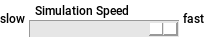

The speed slider controls the rate at which a model is simulated. The default speed is the maximum speed your system can support, but you can slow this down to more closely observe dynamics at crucial points in a simulation.